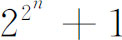

5．几何作图问题
18世纪的数学家们怀疑一些著名的作图问题能被解决。伽罗瓦的工作提供了可作图的一个判别法，这个判别法解决了一些著名的问题。
用圆规、直尺作图的每一步都需要找一个交点，或者是属于两条直线的，或者是一直线和一圆的，或者是两个圆的。由于引进了坐标几何，人们认识到，用代数术语说，这样的步骤意味着同时求解两个线性方程，或一个线性和一个二次方程，或两个二次方程。在任何一种情况下，可能遇到的最坏情况，在代数上是一个平方根。因此，由相继的步骤或作图所找到的量，最坏的结果是施加于给定量上的一串平方根。因此，可以作图的量必须位于如下一些域中，这些域是由包含给定量的域仅仅添加给定量的平方根或后来作出的量的平方根而得到。我们称这样的扩张域为二次扩张域。
在进行相继的作图时，有几个限制必须注意。例如，某些步骤允许用任意的直线或圆。譬如在二等分线段时，我们能用大于线段一半的圆。我们必须在给定元素的域中在可作图的扩张域中选择这个圆。这是能做到的。
还有，扩张域可以包含复元素，因为，譬如说，负坐标的平方根可能出现。这些复元素是可作图的，因为所出现的复量的实部和虚部的每一个都是一个实方程的根；而这些根是可作图的。
给了一个作图问题，首先要建立一个代数方程，它的解是所要求的量。这个量必须属于给定量的域的某个二次扩张域。在正17边形的情况里，这方程是x17-1＝0，而给定的量可以取成单位圆的半径。相关的不可约方程是x16＋x15＋…＋1＝0。用伽罗瓦理论的术语说，一个方程能用平方根求解的必要和充分条件是方程的伽罗瓦群的阶是2的方幂。方程x16＋x15＋…＋1＝0正是这种情况，合成序列是2，2，2，2。这意思是说，预解式是次数为2的二项方程，从而仅有平方根被添加到原来的由单位圆的给定半径所确定的有理域中。由伽罗瓦的这个判别法我们能证明高斯的结论，即素数p边的正多边形能用直尺和圆规作图当且仅当素数p具有形式

，即当p＝3，5，17，257，…时，而对p＝7，11，13，19，23，29，31，…则不行。伽罗瓦理论还能用来证明三等分任意角或倍立方体的问题都是不可解的。但伽罗瓦的判别法完全不适用于化圆为方的问题。这里，给定量是圆的半径，要解的方程是x2＝πr2。虽然这个方程本身恰为二次，但下述事实不对，即它的解属于由给定量确定的域的二次扩张域，这是因为π不是一个代数无理数（第41章第2节）。因此，伽罗瓦的工作不仅完全回答了哪些方程可用代数运算求解的问题，而且给了一个一般的判别法来判定几何图形利用直尺和圆规的可作图性。
就著名的作图问题而言，应该注意，在应用伽罗瓦理论以前，高斯和万采尔（Pierre L．Wantzel）已经确定了哪些正多边形可以作图（第2节），而且万采尔在1837年的文章(16)中证明了一般的角不能三等分，给定的立方体也不能加倍。他证明了每个可作图的量必须满足一个2n次的方程，而这对刚才说到的两个问题是不成立的。